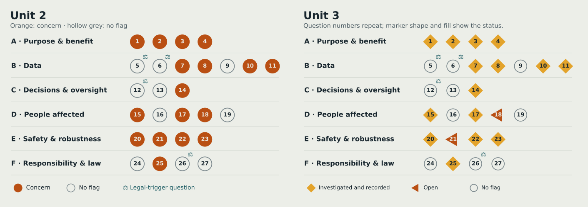

Chapter S17
What changed
I checked each original screen result against the evidence now on the site.
In short
I checked all 27 questions again against the Unit 3 site: 15 have a recorded response, 2 remain open by decision, and 10 remain no-flags.

The re-screen
I kept each original Unit 2 lamp beside the Unit 3 status. “Investigated and recorded” means the site now shows concrete evidence of a response; it does not mean every risk has vanished. A no-flag stays a no-flag, not a claim that the work is safe.
| Question | Unit 2 lamp | Unit 3 status | What changed | Evidence |
|---|---|---|---|---|
| Q1 — Shapes a decision that matters to someone's life? | 🟠 Concern | Investigated and recorded | I state the descriptive purpose and limit uses. | S10 |
| Q2 — Could a simpler non-AI process do it? | 🟠 Concern | Investigated and recorded | I explain why the two models are included. | Unit 2 · Machine learning |
| Q3 — Purpose vague, or likely to grow? | 🟠 Concern | Investigated and recorded | I list the uses this work is not for. | S13 |
| Q4 — Benefit to me, cost to others? | 🟠 Concern | Investigated and recorded | I name the risk of stigma and show uncertainty. | S10 |
| Q5 — Information about identifiable people? | ⚪ No flag | No flag | The published outputs remain area summaries. | S13 |
| Q6 — Profiling individuals? | ⚪ No flag | No flag | The models still describe area patterns. | S13 |
| Q7 — Sensitive data, or a stand-in for it? | 🟠 Concern | Investigated and recorded | Notebook 07 tests proxy overlap. | S12 |
| Q8 — Re-identification by combining fields? | 🟠 Concern | Investigated and recorded | I publish six broad groups and explain the limits. | S13 |
| Q9 — Origin, accuracy or permission unknown? | ⚪ No flag | No flag | Source origins and limits remain recorded. | S4 |
| Q10 — Groups missing or thin? | 🟠 Concern | Investigated and recorded | Notebook 09 examines within-area variation. | S16 |
| Q11 — Learning from past human decisions? | 🟠 Concern | Investigated and recorded | Notebook 07 tests how crime changes the model. | S12 |
| Q12 — Solely automated consequential decision? | ⚪ No flag | No flag | No consequential decisions are automated. | S13 |
| Q13 — Reviewer lacks time or authority to overrule? | ⚪ No flag | No flag | There is no reviewer decision workflow. | S13 |
| Q14 — Output treated as proof, not a prompt? | 🟠 Concern | Investigated and recorded | I show rank intervals and explain their limits. | S11 |
| Q15 — Errors fall more on some groups? | 🟠 Concern | Investigated and recorded | Notebook 07 compares errors across area groups. | S12 |
| Q16 — Affected without knowing AI was involved? | ⚪ No flag | No flag | AI use remains disclosed. | S10 |
| Q17 — Can't understand, correct or challenge the result? | 🟠 Concern | Investigated and recorded | I provide a question form and correction route. | S10 |
| Q18 — Affected people left out of design and testing? | 🟠 Concern | Open | Open by decision: independent user testing was out of scope for this submission. | S10 |
| Q19 — Changes jobs, pace or monitoring? | ⚪ No flag | No flag | The project does not change jobs or monitoring. | S10 |
| Q20 — Could failure cause physical or psychological harm? | 🟠 Concern | Investigated and recorded | I state the risk of overreading maps and give caveats. | S10 |
| Q21 — Tested only in a demo, not real use? | 🟠 Concern | Open | Open by decision: independent user testing was out of scope for this submission. | S10 |
| Q22 — No tested way to pause, override or fall back? | 🟠 Concern | Investigated and recorded | I record correction and retirement steps. | S14 |
| Q23 — Could it be misused or used out of purpose? | 🟠 Concern | Investigated and recorded | I state excluded uses and keep findings descriptive. | S13 |
| Q24 — No named owner, monitor or stop authority? | ⚪ No flag | No flag | I am named as owner. | S13 |
| Q25 — Depends on a supplier's model or data I can't inspect? | 🟠 Concern | Investigated and recorded | I identify modelled inputs, limits and revision risks. | S4 |
| Q26 — EU AI Act high-risk use? | ⚪ No flag | No flag | The EU AI Act scope and high-risk screen are recorded. | S13 |
| Q27 — Used in a different population or country? | ⚪ No flag | No flag | The findings remain specific to Birmingham. | S13 |
Still open
- Q18 — Affected people left out of design and testing. This remains open by decision; independent user testing was out of scope for this submission. Testing is planned for the evaluation stage in S14.
- Q21 — Tested only in a demo. This remains open by decision; independent user testing was out of scope for this submission. Testing is planned for the evaluation stage in S14.
These are open findings, not promises that user testing will clear them. If testing reveals a new problem, I will record that and decide what to change before closing either item.
User testing
Independent user testing was not run for this submission. On 17 October 2026, I reviewed the dashboard and site myself. That review led to fixes for the dashboard search bug; the HLE, rank and band labels; the six-groups note in the active-measure panel; the visibility of the “Question this work” link; and the plain-English wording in S11. Q18 and Q21 remain open by decision. Independent user testing is planned as part of the evaluation stage in S14 — Lifecycle.